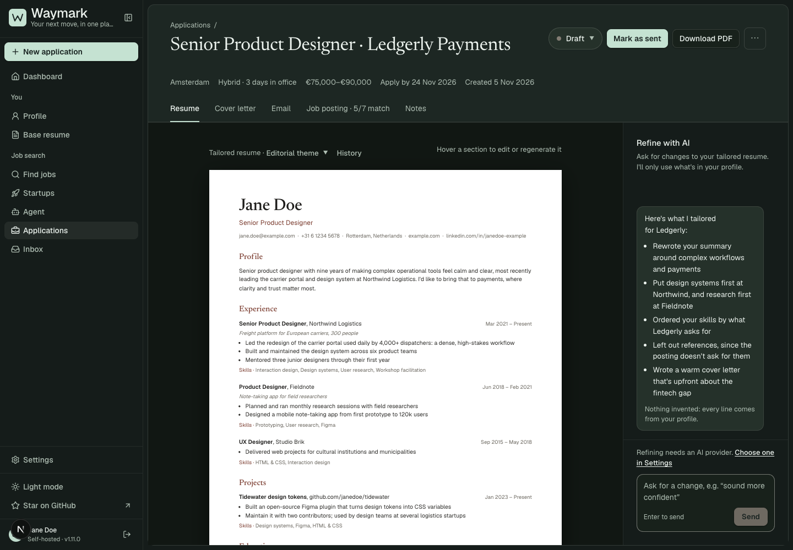

Look beyond the score.
Review education, experience, and sponsorship requirements separately from how closely a role matches your profile.
Find suitable roles. Prepare thoughtful applications. Keep your search together.
Explore the workspace
From the first promising role to the next conversation.
Review education, experience, and sponsorship requirements separately from how closely a role matches your profile.
Build tailored resumes and cover letters from your profile. Review every draft before sending it.
Track applications, interviews, and follow-ups alongside connected email and calendar accounts.
Your profile and applications live locally. You choose which AI provider helps with the writing.
Cloud AI and connected email services receive the information needed for the features you enable. Local storage doesn’t mean every feature works offline.
Choose a supported cloud provider with your own API key, or a local model. An eligible ChatGPT plan can connect through browser sign-in. Availability and usage limits depend on your provider and plan.
It checks your profile against requirements in the posting and shows the evidence. Missing details stay uncertain. A strong match score does not override a requirement, and you should verify important restrictions with the employer.
Yes. The first release is available for Apple Silicon Macs (M1 or later) running macOS 13.5 or later. Download the disk image, drag Waymark to Applications, and open it. No invite, Waymark account, Docker, or Terminal is required. A Windows 10/11 x64 test installer is also available. Run the Setup.exe and follow the wizard. Intel Mac and Windows ARM installers are not available yet.
This release is not Apple-notarized or signed with a Developer ID. After trying to open it, go to System Settings → Privacy & Security → Open Anyway. Confirm the app name. Managed Macs may not permit this. Read Apple’s instructions.
Download, open, and make it yours. No invitation needed.
macOS 0.1.2 · Windows 0.1.3 test release. No paid code-signing certificates or Apple notarization. Mac installation guide · Windows instructions, source, and checksums. Your data stays on your computer; provider usage limits and charges may apply.